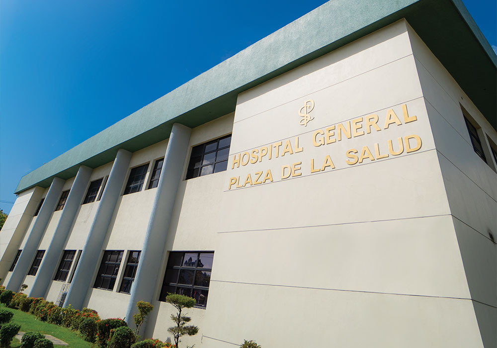
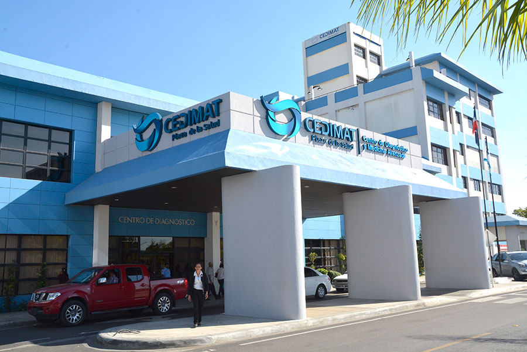
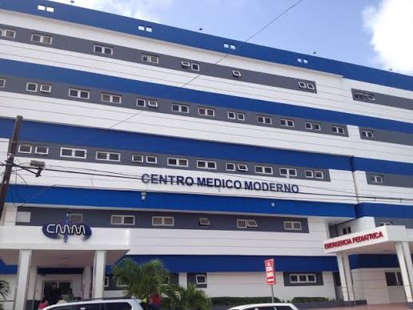

Uno de los principales centros médicos de República Dominicana, reconocido por ofrecer atención especializada y servicios de alta calidad.

Centro de Diagnóstico, Medicina Avanzada y Telemedicina, reconocido por su innovación tecnológica y excelencia médica.

Centro de salud privado que ofrece diferentes especialidades médicas y servicios de diagnóstico.
Estamos trabajando para crear una red de hospitales, clínicas y consultorios que permita ofrecer una mejor experiencia a los pacientes.
Contáctanos